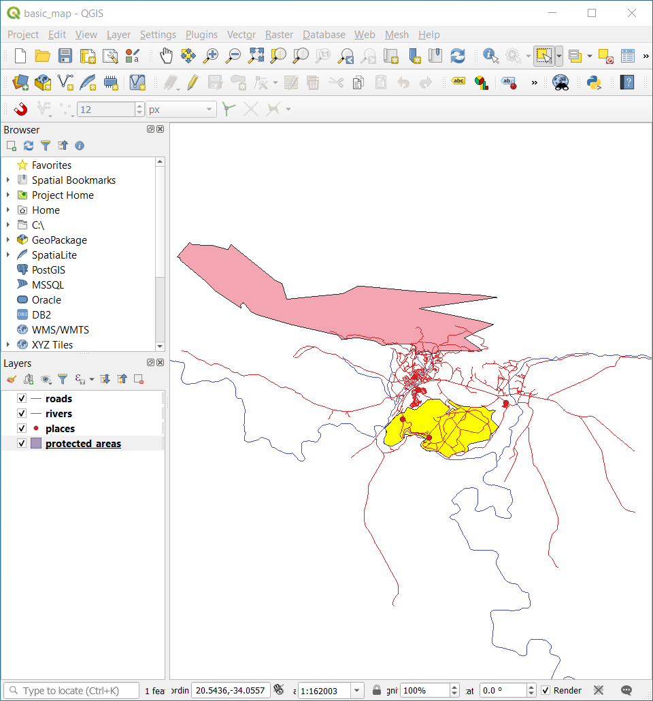
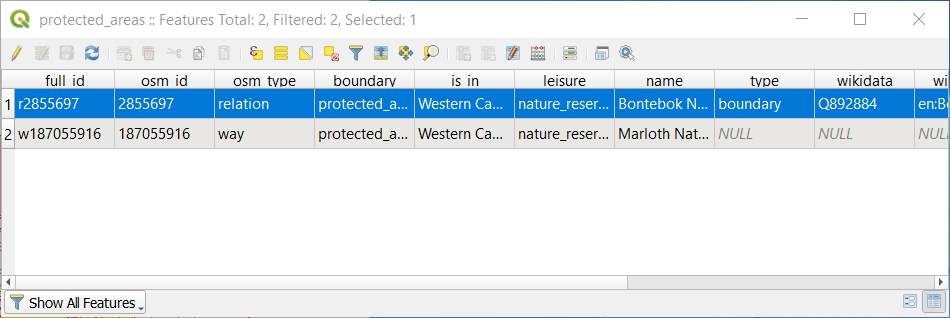

Vector data is arguably the most common kind of data in the daily
use of GIS. The vector model represents the location and shape of geographic
features using points, lines and polygons (and for 3D data also surfaces and
volumes), while their other properties are included as attributes (often presented
as a table in QGIS).
Up to now, none of the changes we have made to the map have been influenced by
the objects that are being shown. In other words, all the land use areas look
alike, and all the roads look alike. When looking at the map, the viewers don’t
know anything about the roads they are seeing; only that there is a road of a
certain shape in a certain area.
But the whole strength of GIS is that all the objects that are visible on the
map also have attributes. Maps in a GIS aren’t just pictures. They represent
not only objects in locations, but also information about those objects.
The goal for this lesson: To learn about the structure of vector data and
explore the attribute data of an object
It’s important to know that the data you will be working with does not only
represent where objects are in space, but also tells you what those
objects are.
From the previous exercise, you should have the protected_areas layer
loaded in your map. If it is not loaded, then you can find the
protected_areas.shpESRI Shapefile format dataset in directory
exercise_data/shapefile.
The polygons representing the protected areas constitute the spatial data,
but we can learn more about the protected areas by exploring the
attribute table.
In the Layers panel, click on the protected_areas layer to
select it.
In the Layer menu, click the Open Attribute Table button (also accessible from top toolbars buttons).
This will open a new window showing the attribute table of the protected_areas layer.
A row is called a record and is associated with a feature
in the Canvas Map, such as a polygon.
A column is called a field (or an attribute), and has a name that helps
describe it, such as name or id.
Values in the cells are known as attribute values.
These definitions are commonly used in GIS, so it is good to become
familiar with them.
In the protected_areas layer, there are two features, which are
represented by the two polygons we see on the Map Canvas.
Note
In order to understand what the fields and attribute values
represent, one may need to find documentation (or metadata) describing
the meaning of the attribute values.
This is usually available from the creator of the data set.
Next, let’s see how a record in the attribute table is linked to a polygon
feature that we see on the Map Canvas.
Go back to the main QGIS window.
In the Edit ► Select menu, click on the Select Feature(s) button.
Make sure the protected_areas layer is still selected in the Layers panel.
Move your mouse to the Map Canvas and left click on the smaller of the two polygons.
The polygon will turn yellow indicating it is selected.

Go back to the Attribute Table window, and you should see a
record (row) highlighted.
These are the attribute values of the selected polygon.

You can also select a feature using the Attribute Table.
In the Attribute Table window, on the far left,
click on the row number of the record that is currently not selected.
Go back to the main QGIS window and look at the Map Canvas. You should
see the larger of the two polygons colored yellow.
To deselect the feature, go to the Attribute Table window
and click on Deselect all features from the layer button.
Sometimes there are many features shown on the Map Canvas and it might be difficult
to see which feature is selected from the Attribute Table. Another way to
identify the location of a feature is to use the Flash Feature
tool.
In the Attribute Table, right-click on any cell in the
row that has the attribute value r2855697 for the field full_id.
In the context menu, click on Flash Feature and watch the
Map Canvas.
You should see the polygon flash red a few times. If you missed it,
try it again.
Another useful tool is the Zoom to Feature tool, that tells QGIS to
zoom to the feature of interest.
In the Attribute Table, right-click on any cell in the
row that has the attribute value r2855697 for the field full_id.
In the context menu, click on Zoom to Feature
Look at the Map Canvas. The polygon should now occupy the extent
of the Map Canvas area.
You may now close the attribute table.
3.1.2. ★☆☆ Try Yourself: Exploring Vector Data Attributes
How many fields are available in the rivers layer?
Tell us a bit about the town places in your dataset.
Open the attribute table for the places layer.
Which field would be the most useful to represent in label form, and why?
Answer
There should be 9 fields in the rivers layer:
Select the layer in the Layers panel.
Right-click and choose Open Attribute Table,
or press the button on the Attributes Toolbar
(it can be enabled from View ► Toolbars menu).
Count the number of columns.
A quicker approach could be to double-click the rivers layer,
open the Layer properties ► Fields tab, where you will
find a numbered list of the table’s fields.
Information about towns is available in the places layer. Open its
attribute table as you did with the rivers layer:
there are two features whose place
attribute is set to town: Swellendam and Buffeljagsrivier.
You can add comment on other fields from these two records, if you like.
The name field is the most useful to show as labels. This is because all its
values are unique for every object and are very unlikely to contain NULL
values. If your data contains some NULL values, do not worry as long as most
of your places have names.
You now know how to use the attribute table to see what is actually in the data
you’re using. Any dataset will only be useful to you if it has the attributes
that you care about. If you know which attributes you need, you can quickly
decide if you’re able to use a given dataset, or if you need to look for
another one that has the required attribute data.
Different attributes are useful for different purposes. Some of them can be
represented directly as text for the map user to see. You’ll learn how to do
this in the next lesson.
 Open Attribute Table button (also accessible from top toolbars buttons).
This will open a new window showing the attribute table of the
Open Attribute Table button (also accessible from top toolbars buttons).
This will open a new window showing the attribute table of the 
{kind=link}

 Deselect all features from the layer button.
Deselect all features from the layer button.